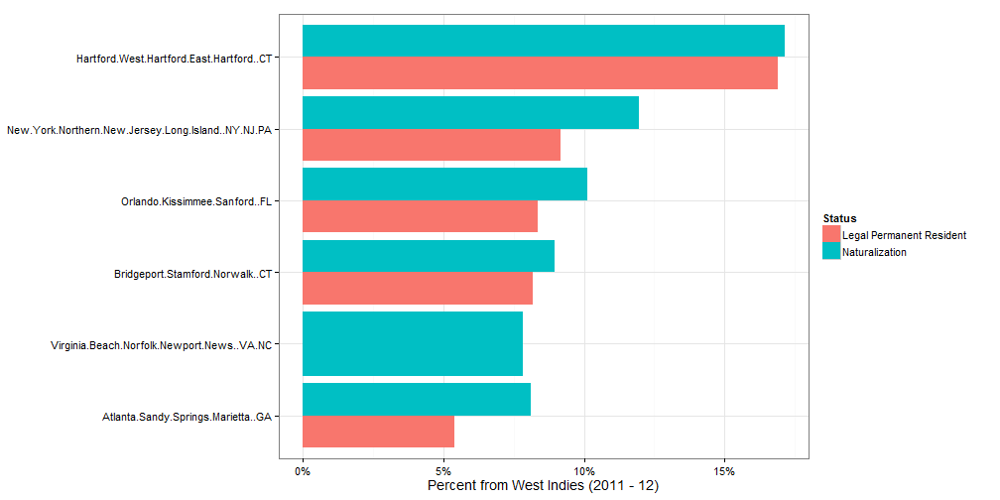
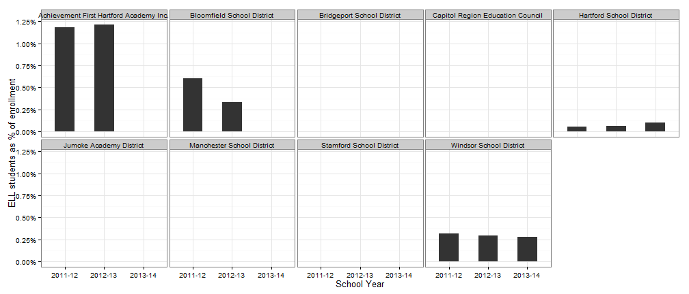

West Indian population in CT
Scott Gaul
Community Indicators Project
What is rate of new arrivals?
Metro Hartford has the highest rate of immigration from the West Indies in the United States (naturalizations and new permanent residents). About 1 in 6 new arrivals for the region are from the West Indies. (This excludes immigration from Cuba, the Dominican Republic and Haiti.)

Looking only at arrivals from Jamaica, the Hartford metro region still has the highest percent nationally.
Within the Caribbean, arrivals from Jamaica are about 80% of all arrivals for 2011-12. Guyana and St. Lucia are the next two countries with the most immigrants to metro Hartford.
Where does the West Indian population live now?
The population of Caribbean origin are in many towns in the state, although mainly the urban centers.

The highest percent from West Indies and Jamaica in the state are in Bloomfield, followed by Hartford and Windsor. East Hartford also has a high rate in our region.
The Jamaican population are mostly clustered in the smaller set of towns around Hartford.
Are there students that speak Patois at home?
Some Connecticut students are recorded as speaking Patois (or 'Patwa') as a second language at home. For the state, Patois was recorded as a home language for about 200 students in 2013-14, or about the same as the occurence of Karen and Khmer(Cambodian). About 30,000 Connecticut residents were born in Jamaica, half living in metro Hartford.
Of students recorded as speaking a second language at home, a smaller number are recorded as English-language learners. In this case, about 30 students were recorded as Patois-speakers in need of English language assistance in the state. (A few districts have fewer than 5 students and don't report exact results.)
As a percent of total district enrollment, Patois speakers only comprise a significant share at Jumoke Academy, between 15 - 20% of students come from Patois-speaking households. This is similar to the base population rates in Hartford, Bloomfield and Windsor. No other district in the region reports more than 0.7% students coming from a Patois-speaking household.
In addition, for English-language learners, no school district has more than 1.25% students registered as Patois-speakers in need of English language assistance and only four districts (Achievement First Hartford, Hartford, Windsor and Bloomfield) register more than 5 students total.
